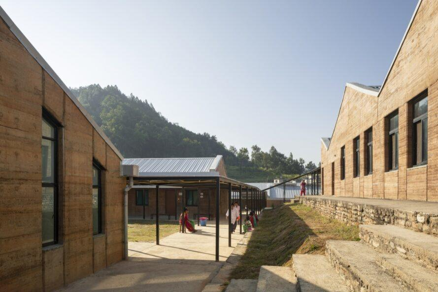
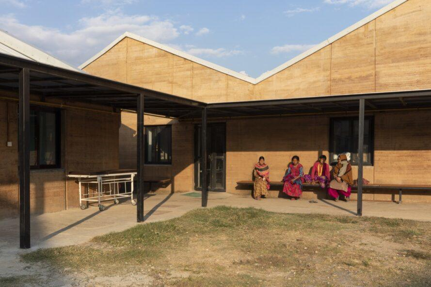
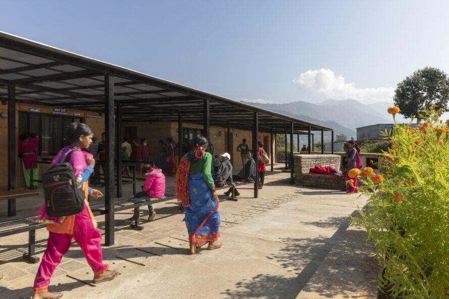
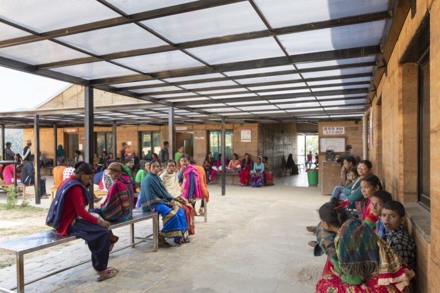
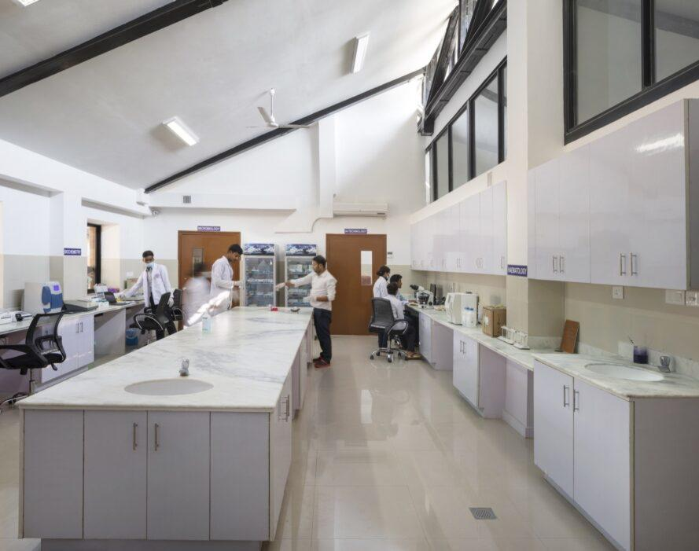
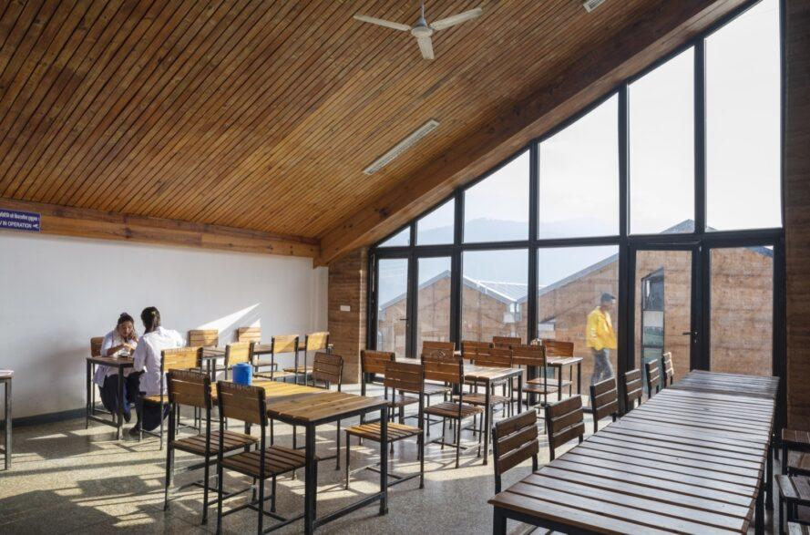
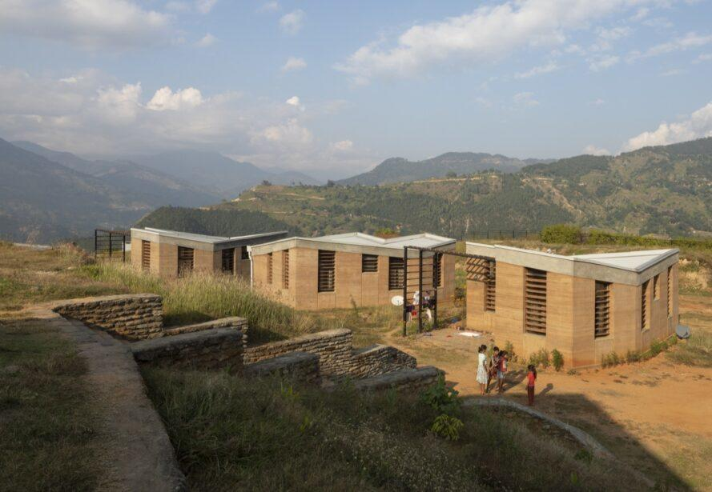

Apr 28, 2020 Design Architecture
INHABITAT: Inspiring rammed earth hospital brings affordable care to rural Nepal
An inspiring beacon of humanitarian architecture has arrived to one of the poorest and most remote regions of Nepal — the new Bayalpata Hospital in Accham. Opened earlier this month to replace an aged and overrun clinic, the new hospital is a model of sustainable rural health made possible through a collaboration between the government of Nepal and NGO Possible Health. New York City-based Sharon Davis Design crafted the 7.5-acre campus, which is built primarily from locally sourced rammed earth and powered by rooftop solar panels.

Located on a hilltop surrounded by the terraced slopes of the Seti River Valley, the new Bayalpata Hospital is expected to provide low-cost, high-quality care to more than 100,000 patients a year from Accham and its six surrounding districts — a number that’s more than eight times its original capacity. The hospital comprises five medical buildings with outpatient, inpatient, surgery, antenatal and emergency facilities for 70 beds as well as clinical functions such as pharmacy, radiology and laboratory spaces. The campus also includes an administration block for offices, a 60-seat cafeteria and 10 single-family houses plus an eight-bedroom dormitory to house the hospital staff and their families.
Related: Rammed earth Kopila Valley School is the “greenest school in Nepal”


Because of the site’s remote and mountainous location, the hospital is primarily built from rammed earth using a low-tech construction method and local labor. Soil from the site was mixed with 6% cement content for stabilization and seismic resistance. This mixture was then formed into blocks with reusable plastic formwork and set atop foundations constructed from local stone, which was also used for pathways and retaining walls.


Local Sal wood was used for built-in furniture, exterior doors and louvers. In addition to the thermal mass of the massive rammed earth walls, passive heating and cooling design strategies were used to keep the hospital comfortable year-round. The campus also includes a new water supply and storage, wastewater treatment facilities and bioswales to manage monsoon-driven erosion. The hospital’s south-facing roofs are topped with a grid-connected 100 kW photovoltaic array that is powerful enough to generate all of the campus’ electricity needs.


“We see this project as a model of how rammed earth, and other vernacular materials, can be utilized to create modern architecture,” said Sharon Davis, principal of Sharon Davis Design. “Without local materials, this project may not have been possible because of its incredibly remote location — a 10-hour drive from the nearest regional airport and a three-day drive on narrow, mountainous roads from the nearest manufacturing centers around Kathmandu.”
Photography by Elizabeth Felicella via Sharon Davis Design
SOURCE: INHABITAT